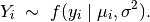
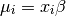
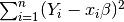
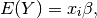
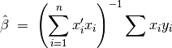
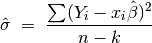
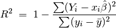

Least Squares Regression for Continuous Dependent Variables
Use least squares regression analysis to estimate the best linear predictor for the specified dependent variables.
With reference classes:
z5 <- zls$new()
z5$zelig(Y ~ X1 + X ~ X, data = mydata)
z5$setx()
z5$sim()
With the Zelig 4 compatibility wrappers:
z.out <- zelig(Y ~ X1 + X2, model = "ls", data = mydata)
x.out <- setx(z.out)
s.out <- sim(z.out, x = x.out)
Attach sample data:
data(macro)
Estimate model:
z.out1 <- zelig(unem ~ gdp + capmob + trade, model = "ls", data = macro)
## Warning: 'regroup' is deprecated.
## Use 'group_by_' instead.
## See help("Deprecated")
## How to cite this model in Zelig:
## Kosuke Imai, Gary King, and Olivia Lau. 2007.
## ls: Least Squares Regression for Continuous Dependent Variables
## in Kosuke Imai, Gary King, and Olivia Lau, "Zelig: Everyone's Statistical Software,"
## http://zeligproject.org/
Summarize regression coefficients:
summary(z.out1)
## Model:
## $by
## [1] 1
##
##
## Call:
## stats::lm(formula = unem ~ gdp + capmob + trade, data = .)
##
## Coefficients:
## (Intercept) gdp capmob trade
## 6.18129 -0.32360 1.42194 0.01985
##
## Next step: Use 'setx' method
Set explanatory variables to their default (mean/mode) values, with high (80th percentile) and low (20th percentile) values for the trade variable:
x.high <- setx(z.out1, trade = quantile(macro$trade, 0.8))
## Warning: 'regroup' is deprecated.
## Use 'group_by_' instead.
## See help("Deprecated")
x.low <- setx(z.out1, trade = quantile(macro$trade, 0.2))
## Warning: 'regroup' is deprecated.
## Use 'group_by_' instead.
## See help("Deprecated")
Generate first differences for the effect of high versus low trade on GDP:
s.out1 <- sim(z.out1, x = x.high, x1 = x.low)
summary(s.out1)
##
## sim x :
## -----
## ev
## mean sd 50% 2.5% 97.5%
## 1 5.434882 0.1877221 5.435081 5.078943 5.802927
## pv
## mean sd 50% 2.5% 97.5%
## 1 5.434882 0.1877221 5.435081 5.078943 5.802927
##
## sim x1 :
## -----
## ev
## mean sd 50% 2.5% 97.5%
## 1 4.614864 0.1856473 4.616415 4.26142 4.983094
## pv
## mean sd 50% 2.5% 97.5%
## 1 4.614864 0.1856473 4.616415 4.26142 4.983094
## fd
## mean sd 50% 2.5% 97.5%
## 1 -0.8200178 0.2294083 -0.822329 -1.272104 -0.3813351
plot(s.out1)
Estimate a model with fixed effects for each country (see for help with dummy variables). Note that you do not need to create dummy variables, as the program will automatically parse the unique values in the selected variable into discrete levels.
z.out2 <- zelig(unem ~ gdp + trade + capmob + as.factor(country), model = "ls", data = macro)
## Warning: 'regroup' is deprecated.
## Use 'group_by_' instead.
## See help("Deprecated")
## How to cite this model in Zelig:
## Kosuke Imai, Gary King, and Olivia Lau. 2007.
## ls: Least Squares Regression for Continuous Dependent Variables
## in Kosuke Imai, Gary King, and Olivia Lau, "Zelig: Everyone's Statistical Software,"
## http://zeligproject.org/
Set values for the explanatory variables, using the default mean/mode values, with country set to the United States and Japan, respectively:
x.US <- setx(z.out2, country = "United States")
## Warning: 'regroup' is deprecated.
## Use 'group_by_' instead.
## See help("Deprecated")
x.Japan <- setx(z.out2, country = "Japan")
## Warning: 'regroup' is deprecated.
## Use 'group_by_' instead.
## See help("Deprecated")
Simulate quantities of interest:
s.out2 <- sim(z.out2, x = x.US, x1 = x.Japan)
plot(s.out2)
The stochastic component is described by a density with mean
 and the common variance
and the common variance 

The systematic component models the conditional mean as

where  is the vector of covariates, and
is the vector of covariates, and  is
the vector of coefficients.
is
the vector of coefficients.
The least squares estimator is the best linear predictor of a
dependent variable given , and minimizes the sum of
squared residuals, .
The expected value (qi$ev) is the mean of simulations from the stochastic component,

given a draw of from its sampling distribution.
In conditional prediction models, the average expected treatment effect (att.ev) for the treatment group is
![\frac{1}{\sum_{i=1}^n t_i}\sum_{i:t_i=1}^n \left\{ Y_i(t_i=1) -
E[Y_i(t_i=0)] \right\},](_images/math/f120915a77efb3200aab141647a59f51df9b4611.png)
where  is a binary explanatory variable defining the
treatment (
is a binary explanatory variable defining the
treatment ( ) and control (
) and control ( ) groups.
Variation in the simulations are due to uncertainty in simulating
) groups.
Variation in the simulations are due to uncertainty in simulating
![E[Y_i(t_i=0)]](_images/math/f658a3cf4cf830cd65eab505c530fb4796fea0ed.png) , the counterfactual expected value of
, the counterfactual expected value of
 for observations in the treatment group, under the
assumption that everything stays the same except that the treatment
indicator is switched to .
for observations in the treatment group, under the
assumption that everything stays the same except that the treatment
indicator is switched to .
The output of each Zelig command contains useful information which you may view. For example, if you run z.out <- zelig(y ~ x, model = ls, data), then you may examine the available information in z.out by using names(z.out), see the coefficients by using z.out$coefficients, and a default summary of information through summary(z.out). Other elements available through the $ operator are listed below.
From the zelig() output object z.out, you may extract:
From summary(z.out), you may extract:
coefficients: the parameter estimates with their associated
standard errors,  -values, and
-values, and  -statistics.
-statistics.

sigma: the square root of the estimate variance of the random
error  :
:

r.squared: the fraction of the variance explained by the model.

adj.r.squared: the above  statistic, penalizing for an
increased number of explanatory variables.
statistic, penalizing for an
increased number of explanatory variables.
cov.unscaled: a  matrix of unscaled covariances.
matrix of unscaled covariances.
The least squares regression is part of the stats package by William N. Venables and Brian D. Ripley .In addition, advanced users may wish to refer to help(lm) and help(lm.fit).